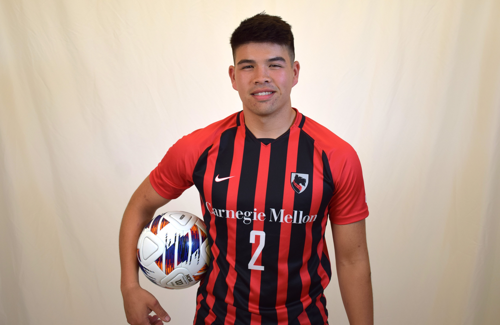

My name is Tyler Harp, and I am pursuing a Master's in Robotics from Carnegie Mellon. My undergrad was
also at Carnegie Mellon, where I studied many topics like Engineering, Mechatronics, Robotics, and
Design. During my undergrad, I was a student-athlete on the Men's Varsity soccer team and a cadet in the
Army ROTC program. Through my unique and multi-disciplinary background, I hope to enter the industry to
help create complex and groundbreaking robotic systems that seek to enable humans rather than replace
them.
My robotics experience comes from my undergraduate education, getting an Additional Major in Robotics at
CMU, and currently, with my Master's in Robotics. I am currently working in CMU's AirLab, working on
drone state estimation for Subcanopy surveillance of Wildfires. I have also worked on a robotics system
called CoralBot that enabled environmental scientists to collect better reef health data. Ultimately, I
hope to create intelligent and human-enabling robotic systems that can help discover new solutions to
challenging problems.
During my time as a student-athlete, I learned to balance the rigor of an academic institution like CMU
with a large time commitment like soccer, which required equal focus and effort. Through my experience
learning to adapt and overcome time crunches and difficult moments, I feel that my perseverance and grit
increased dramatically, all with the support of a great group of friends and teammates who helped me
through these challenging times. Ultimately, in my Senior Year, I was able to help lead our team to the
first NCAA Tournament appearance in my collegiate career and received an All-UAA honorable mention and
Season MVP award.
My experience as a ROTC cadet worked to increase my leadership skills and challenged me to think in ways
unseen in regular college life. This program mixed classwork and field exercises that tested your mental
toughness and ability to work through problems with others in situations that are uncommon to what I
would have experienced otherwise. As a cadet, I learned a lot in various fields, like public speaking,
people management, and self-confidence. I ultimately graduated as a Distinguished Military Graduate,
scoring in the top 20% of all cadets throughout the United States, and continue to serve in the Army
Reserves as a 2nd Lieutenant.